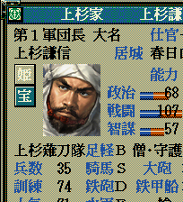
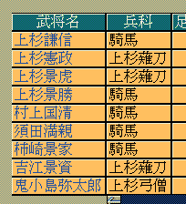
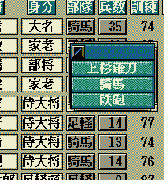
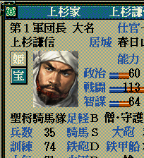
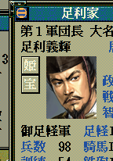

部隊名リスト型＆ カスタム::On_部隊名表示直前(int 武将番号) {
return NULL;
}
  
部隊名リスト型＆ カスタム::On_部隊名表示直前(int 武将番号) {
int iBushouID = 武将番号-1; // 武将番号→武将番号【配列用】に
if ( 0 <= iBushouID && iBushouID < 最大数::武将情報::配列数 ) {
if ( p武将戸籍情報[iBushouID].顔番号 == 顔番号::長尾景虎 ) { // 上杉謙信の顔＆列伝番号
if ( Get_戦闘値(iBushouID) >= 90 ) { // 戦闘値(家宝含)が180以上
部隊名リスト型 nb = {
"軍神足軽",
"軍神騎馬",
"軍神鉄砲",
"軍神騎鉄"
};
return nb;
} else {
部隊名リスト型 nb = {
"聖将足軽",
"聖将騎馬",
"聖将鉄砲",
"聖将騎鉄"
};
return nb;
}
}
}
// 変更しない場合NULL
return NULL;
}

部隊名リスト型＆ カスタム::On_部隊名表示直前(int 武将番号) {
/*
* 北条家血筋の大名に帰属するすべての者の兵科部隊名を変更する。
*/
int iBushouID = 武将番号-1; // 武将番号→武将番号【配列用】に
if ( 0 <= iBushouID && iBushouID < 最大数::武将情報::配列数 ) {
// 対象の武将が帰属している大名勢力の番号を求める。
int iDaimyoID = p武将情報[iBushouID].所属大名【大名番号】-1;
// 存在すれば
if ( 0 <= iDaimyoID && iDaimyoID < 最大数::大名情報::配列数 ) {
// その大名勢力の大名の武将ＩＤを求める。
int iDaimyoBushouID = p大名情報[iDaimyoID].大名【武将番号】-1;
// 大名いるはずだが…
if ( 0 <= iDaimyoBushouID && iDaimyoBushouID < 最大数::武将情報::配列数 ) {
// その大名の血筋は８（北条家の血筋）
if ( p武将情報[iDaimyoBushouID].所属血筋 == 8 ) {
部隊名リスト型 nb = {
"北条足軽",
"北条騎馬",
"北条鉄砲",
"北条騎鉄"
};
return nb;
}
}
}
}
// 変更しない場合NULL
return NULL;
}
武将情報画面で見る際に出る「隊」の字は、以下のように「Set_部隊名書式」関数で変更することが出来る。

部隊名リスト型＆ カスタム::On_部隊名表示直前(int 武将番号) {
int iBushouID = 武将番号 - 1; // 武将番号→武将番号【配列用】に
if (0 <= iBushouID && iBushouID < 最大数::武将情報::配列数) {
if (p武将戸籍情報[iBushouID].顔番号 == 顔番号::長尾景虎) {
部隊名リスト型 nb = {
"足軽",
"騎馬",
"鉄砲",
"騎鉄"
};
// 隊ではなく、軍を付ける
Set_部隊名書式(nb, "%s軍");
return nb;
}
if (p武将戸籍情報[iBushouID].顔番号 == 顔番号::足利義輝) {
部隊名リスト型 nb = {
"足軽",
"騎馬",
"鉄砲",
"騎鉄"
};
// 足軽(弓隊含む)か騎馬の時は、修飾として前に「御」、後ろに「軍」を付ける
if (p武将情報[iBushouID].兵態 == 兵態::騎馬 || p武将情報[iBushouID].兵態 == 兵態::足軽) {
Set_部隊名書式(nb, "御%s軍");
}
// それ以外の時は、「隊」も何も付けない
else {
Set_部隊名書式(nb, "%s");
}
return nb;
}
}
// 変更しない場合NULL
return NULL;
}